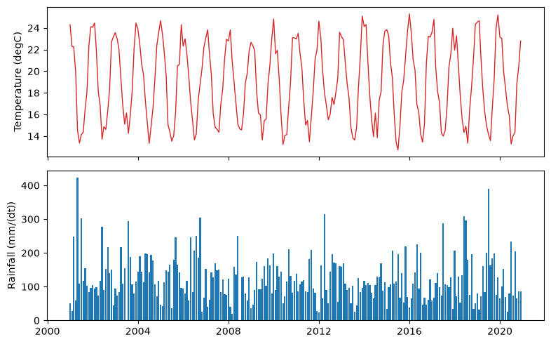

Databases - Basics#
This tutorial covers DataBase, the SQLite database of plans for time series of environmental variables. The example is a single weather station with monthly air temperature and rainfall.
See also
The database relies on three catalogs that ship with plans: variables, statistics and flags.
Notebook setup#
For users running this tutorial as a Jupyter Notebook, this cell must be executed first:
import sys
import json
from pathlib import Path
import numpy as np
import pandas as pd
import matplotlib.pyplot as plt
# Install `plans` in `google.colab`.
# Use `pip install plans` for other environments.
if "google.colab" in sys.modules:
import os
os.system(f"{sys.executable} -m pip install -q plans")
from plans.databases import DataBase
# This avoids warnings related to uninstalled fonts
import logging
# Set the matplotlib font manager logger to only show errors (hides warnings)
logging.getLogger('matplotlib.font_manager').setLevel(logging.ERROR)
# define output folder
OUTPUT_DIR = Path("outputs/databases")
OUTPUT_DIR.mkdir(parents=True, exist_ok=True)
print(f"Outputs will be saved to: ./{OUTPUT_DIR}")
Outputs will be saved to: ./outputs/databases
Describing the datasets#
A database stores records: one value at one time. Each record belongs to a spec, which describes a dataset: what variable it measures, which statistic summarizes each value over the time step, and where the data comes from. These three fields point to the catalogs by name.
Spec names are uppercase, with letters, digits and _. Here, a monthly mean temperature and a monthly rainfall total:
specs = [
{
"name": "TAS_MONTHLY",
"abstract": "Monthly mean air temperature at the station (synthetic)",
"method": "mean of daily readings",
"timestep": "1M",
"extent": "station",
"scale": 1,
"offset": 0,
"start": "2001-01-01",
"end": None,
"variable_name": "surface air temperature",
"statistic_name": "mean",
"source_name": "INMET",
},
{
"name": "PPT_MONTHLY",
"abstract": "Monthly rainfall total at the station (synthetic)",
"method": "sum of daily readings",
"timestep": "1M",
"extent": "station",
"scale": 1,
"offset": 0,
"start": "2001-01-01",
"end": None,
"variable_name": "precipitation",
"statistic_name": "sum",
"source_name": "INMET",
},
]
file_specs = OUTPUT_DIR / "station_specs.json"
file_specs.write_text(json.dumps(specs, indent=2), encoding="utf-8")
print(f"Specs saved to: ./{file_specs}")
Specs saved to: ./outputs/databases/station_specs.json
Creating the database#
The .new() method creates the file from a setup. The setup is a dict, or a TOML or JSON file with the same structure. It needs the path of the database and the path of the specs file. Catalogs come from plans unless the setup points to other files. With overwrite=True, an existing file is replaced, so this notebook can run again:
db = DataBase(name="Station")
file_db = db.new(
config={
"database": {"path": str(OUTPUT_DIR / "station.db")},
"specs": {"path": str(file_specs)},
},
overwrite=True,
)
print(db.inspect_schema(quiet=True))
[Station]
records (0 rows) specs (2 rows) flags (10 rows)
id INTEGER id INTEGER id INTEGER
inserted INTEGER name TEXT name TEXT
datetime INTEGER abstract TEXT abstract TEXT
value REAL method TEXT alias TEXT
flag_value INTEGER timestep TEXT value INTEGER
spec_id INTEGER extent TEXT
scale REAL
offset REAL
start INTEGER
end INTEGER
variable_name TEXT
statistic_name TEXT
source_name TEXT
variables (152 rows) statistics (32 rows) sources (3 rows)
id INTEGER id INTEGER id INTEGER
code TEXT name TEXT name TEXT
name TEXT alias TEXT alias TEXT
alias TEXT title TEXT title TEXT
symbol TEXT abstract TEXT abstract TEXT
title TEXT symbol TEXT citation TEXT
abstract TEXT formula TEXT url TEXT
synonyms TEXT
units TEXT
dimension TEXT
dtype TEXT
domain TEXT
discipline TEXT
theme TEXT
category TEXT
source TEXT
url TEXT
Larger projects often keep the setup in a file, and pass its path instead: db.new(config="station_setup.toml"). This setup, as a file:
[database]
path = "outputs/databases/station.db"
[specs]
path = "outputs/databases/station_specs.json"
{
"database": {"path": "outputs/databases/station.db"},
"specs": {"path": "outputs/databases/station_specs.json"}
}
Relative paths follow the working directory, not the setup file. Both formats refuse single backslashes, so Windows paths are written with forward slashes.
The database is now connected. The catalogs are plain tables, so SQL works on them. The units and the valid domain of each variable come from the variables table:
db.query_sql(
sql="SELECT code, name, units, domain FROM variables WHERE name IN (?, ?)",
params=["surface air temperature", "precipitation"],
)
| code | name | units | domain | |
|---|---|---|---|---|
| 0 | CLM100 | precipitation | mm/(dt) | [0U) |
| 1 | CLM001 | surface air temperature | degC | (U) |
print(db.inspect_specs(quiet=True))
[Station — specs]
TAS_MONTHLY (id 1)
surface air temperature · mean · 1M · station
source: INMET
period: 2001-01-01 → open
method: mean of daily readings
Monthly mean air temperature at the station (synthetic)
PPT_MONTHLY (id 2)
precipitation · sum · 1M · station
source: INMET
period: 2001-01-01 → open
method: sum of daily readings
Monthly rainfall total at the station (synthetic)
Sample data#
Lets make 20 years of monthly data. Temperature follows a seasonal cycle, warmer in January, as in the southern hemisphere. Rainfall is drawn from a gamma distribution whose mean also changes with the season:
rng = np.random.default_rng(seed=42) # ensure reproducibility
dates = pd.date_range(start="2001-01-01", end="2020-12-01", freq="MS")
season = np.cos(2 * np.pi * (dates.month - 1) / 12)
df_tas = pd.DataFrame(
{"datetime": dates, "value": 19 + 5 * season + rng.normal(scale=1, size=len(dates))}
)
mean_ppt = 120 - 30 * season
df_ppt = pd.DataFrame(
{"datetime": dates, "value": rng.gamma(shape=4, scale=mean_ppt / 4)}
)
df_ppt.head()
| datetime | value | |
|---|---|---|
| 0 | 2001-01-01 | 50.194364 |
| 1 | 2001-02-01 | 28.809903 |
| 2 | 2001-03-01 | 247.847522 |
| 3 | 2001-04-01 | 58.258278 |
| 4 | 2001-05-01 | 422.441777 |
Real data is never this clean. Lets add two problems to the rainfall: a month the station did not report, and a negative value from a faulty sensor:
df_ppt.loc[30, "value"] = np.nan
df_ppt.loc[90, "value"] = -12.0
df_ppt.loc[[30, 90]]
| datetime | value | |
|---|---|---|
| 30 | 2003-07-01 | NaN |
| 90 | 2008-07-01 | -12.0 |
Inserting records#
The .insert_records() method takes a DataFrame with datetime and value columns, the spec name, and a flag for the batch. Flag 1 is regular. Dates can be text or datetimes; they are stored as epoch seconds:
db.insert_records(dataframe=df_tas, spec_name="TAS_MONTHLY", flag=1)
For the rainfall, two things happen. Missing values are dropped by default; with nan_policy="void", they are stored as an empty value with the void flag (0), so the gap reported by the station is kept. And values outside the domain of the variable, [0U) for precipitation, turn from regular into suspect (2), with a warning. The value is kept for review:
import warnings
# catch the warning here only to print its message
with warnings.catch_warnings(record=True) as caught:
warnings.simplefilter("always")
db.insert_records(dataframe=df_ppt, spec_name="PPT_MONTHLY", flag=1, nan_policy="void")
for warning in caught:
print(f"{warning.category.__name__}: {warning.message}")
UserWarning: 1 value(s) of PPT_MONTHLY outside [0U) flagged suspect
print(db.inspect_records(head=5, quiet=True))
[Station]
records (480 rows)
id INTEGER
inserted INTEGER
datetime INTEGER
value REAL
flag_value INTEGER
spec_id INTEGER
head (5)
id inserted datetime value flag_value spec_id
1 2026-11-09 13:40 2001-01-01 00:00 24.304717 1 1
2 2026-11-09 13:40 2001-02-01 00:00 22.290143 1 1
3 2026-11-09 13:40 2001-03-01 00:00 22.250451 1 1
4 2026-11-09 13:40 2001-04-01 00:00 19.940565 1 1
5 2026-11-09 13:40 2001-05-01 00:00 14.548965 1 1
Querying records#
The .query_records() method takes all filters and options in one dict. By default, it returns the long format, one row per record, with datetime as a UTC timestamp:
df = db.query_records(
query_dict={"spec_name": "PPT_MONTHLY", "start": "2003-01-01", "end": "2003-12-31"}
)
df[["datetime", "value", "flag_value", "spec_name"]]
| datetime | value | flag_value | spec_name | |
|---|---|---|---|---|
| 0 | 2003-01-01 00:00:00+00:00 | 94.391632 | 1 | PPT_MONTHLY |
| 1 | 2003-02-01 00:00:00+00:00 | 73.691661 | 1 | PPT_MONTHLY |
| 2 | 2003-03-01 00:00:00+00:00 | 84.131814 | 1 | PPT_MONTHLY |
| 3 | 2003-04-01 00:00:00+00:00 | 218.032488 | 1 | PPT_MONTHLY |
| 4 | 2003-05-01 00:00:00+00:00 | 109.065666 | 1 | PPT_MONTHLY |
| 5 | 2003-06-01 00:00:00+00:00 | 155.584754 | 1 | PPT_MONTHLY |
| 6 | 2003-07-01 00:00:00+00:00 | NaN | 0 | PPT_MONTHLY |
| 7 | 2003-08-01 00:00:00+00:00 | 294.463555 | 1 | PPT_MONTHLY |
| 8 | 2003-09-01 00:00:00+00:00 | 188.391552 | 1 | PPT_MONTHLY |
| 9 | 2003-10-01 00:00:00+00:00 | 106.514657 | 1 | PPT_MONTHLY |
| 10 | 2003-11-01 00:00:00+00:00 | 80.398374 | 1 | PPT_MONTHLY |
| 11 | 2003-12-01 00:00:00+00:00 | 115.158401 | 1 | PPT_MONTHLY |
Flags select records. Here, the records that need attention:
df = db.query_records(query_dict={"flag_value": [0, 2]})
df[["datetime", "value", "flag_value", "spec_name"]]
| datetime | value | flag_value | spec_name | |
|---|---|---|---|---|
| 0 | 2003-07-01 00:00:00+00:00 | NaN | 0 | PPT_MONTHLY |
| 1 | 2008-07-01 00:00:00+00:00 | -12.0 | 2 | PPT_MONTHLY |
The wide format has one column per spec, indexed by datetime. With with_meta, the variable, units, statistic and source of each spec go to .attrs["specs"]. Selecting only regular records leaves the gap and the suspect month empty:
wide = db.query_records(
query_dict={
"spec_name": ["TAS_MONTHLY", "PPT_MONTHLY"],
"flag_value": 1,
"wide": True,
"with_meta": True,
}
)
wide.head()
| spec_name | TAS_MONTHLY | PPT_MONTHLY |
|---|---|---|
| datetime | ||
| 2001-01-01 00:00:00+00:00 | 24.304717 | 50.194364 |
| 2001-02-01 00:00:00+00:00 | 22.290143 | 28.809903 |
| 2001-03-01 00:00:00+00:00 | 22.250451 | 247.847522 |
| 2001-04-01 00:00:00+00:00 | 19.940565 | 58.258278 |
| 2001-05-01 00:00:00+00:00 | 14.548965 | 422.441777 |
meta = wide.attrs["specs"].set_index("spec_name")
meta
| variable_name | units | statistic_name | source_name | |
|---|---|---|---|---|
| spec_name | ||||
| TAS_MONTHLY | surface air temperature | degC | mean | INMET |
| PPT_MONTHLY | precipitation | mm/(dt) | sum | INMET |
fig, axes = plt.subplots(nrows=2, ncols=1, figsize=(8, 5), sharex=True)
axes[0].plot(wide.index, wide["TAS_MONTHLY"], color="tab:red", lw=1)
axes[0].set_ylabel(f'Temperature ({meta.loc["TAS_MONTHLY", "units"]})')
axes[1].bar(wide.index, wide["PPT_MONTHLY"], width=25, color="tab:blue")
axes[1].set_ylabel(f'Rainfall ({meta.loc["PPT_MONTHLY", "units"]})')
plt.tight_layout()
plt.show()

As a DataFrame, the result goes straight into pandas. The mean year:
wide.groupby(wide.index.month).mean().round(1)
| spec_name | TAS_MONTHLY | PPT_MONTHLY |
|---|---|---|
| datetime | ||
| 1 | 23.7 | 98.1 |
| 2 | 23.3 | 84.3 |
| 3 | 21.2 | 110.6 |
| 4 | 19.0 | 133.7 |
| 5 | 16.4 | 140.4 |
| 6 | 14.7 | 133.7 |
| 7 | 14.4 | 175.6 |
| 8 | 14.4 | 145.6 |
| 9 | 16.3 | 151.2 |
| 10 | 18.9 | 133.1 |
| 11 | 21.6 | 92.7 |
| 12 | 23.5 | 91.4 |
Closing and reopening#
The .close() method releases the file. Later, .connect() opens it again, with all the records in place:
db.close()
db = DataBase(name="Station")
db.connect(file_db=file_db)
print(len(db.query_records()), "records")
db.close()
480 records